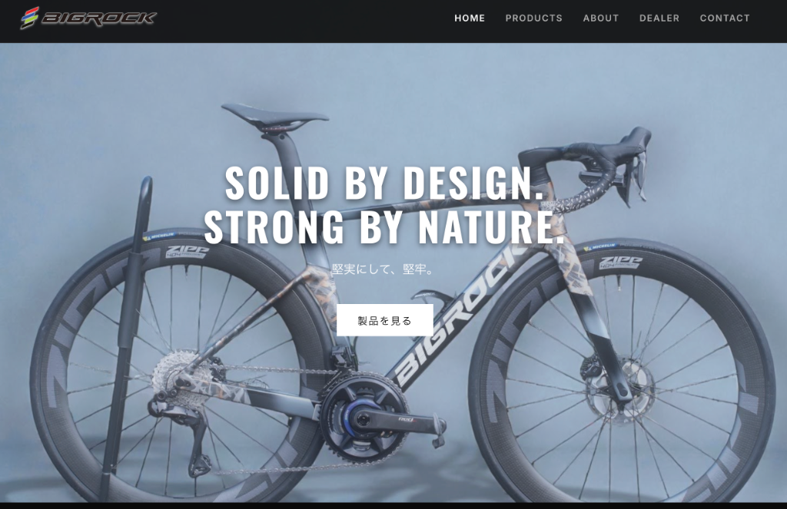
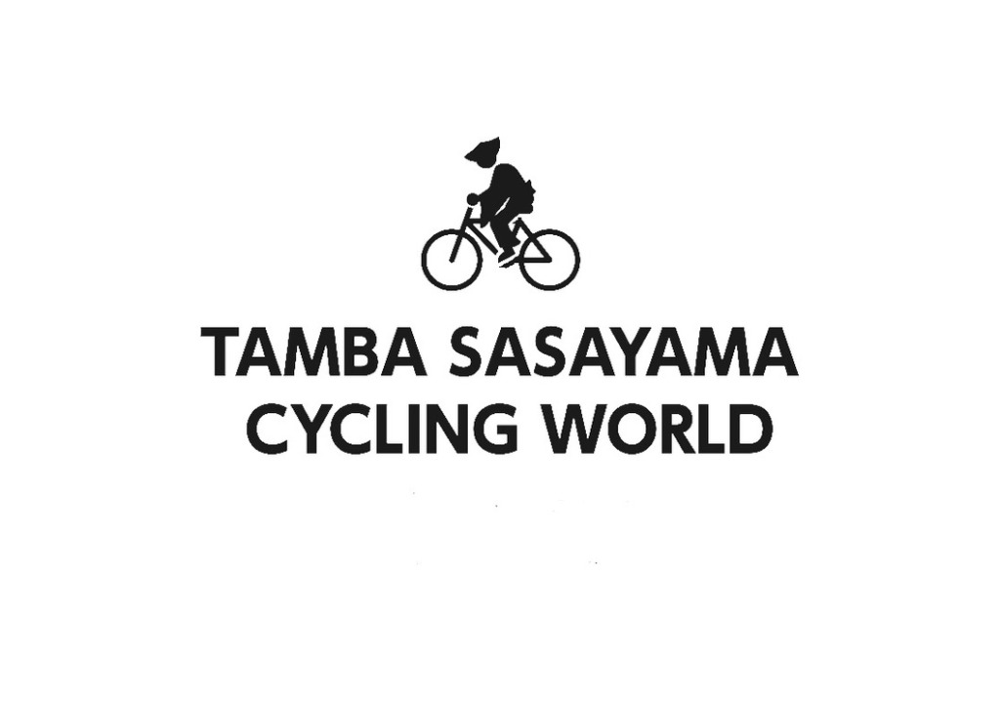
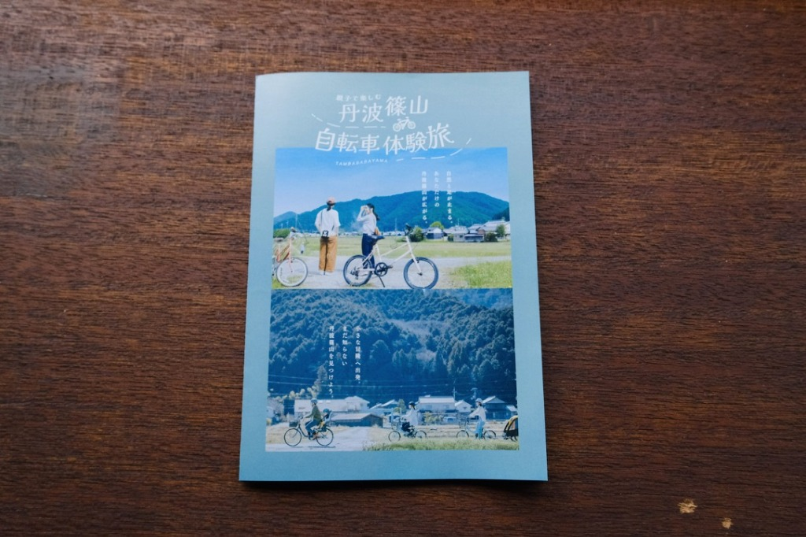
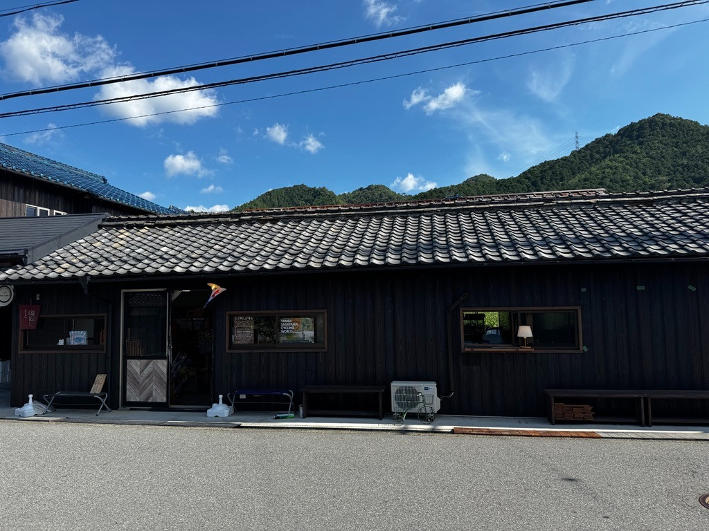

自転車屋の現場から生まれた、
地域事業者のためのWeb開発。
ハイランダーWEB部は、丹波篠山の自転車店を運営しながら、予約・問い合わせ・顧客管理・整備受付・情報発信の仕組みを自分たちで作ってきました。
きれいなホームページだけで終わらせず、実際の現場で使えるWebサイトと小さな業務ツールを一緒に整えます。
なぜ、自転車屋がWeb開発をしているのか。
私たちは、もともとWeb制作会社ではありません。毎日、お客様の自転車を預かり、修理し、見積もりを作り、予約を受け、完了の連絡をする小さな店舗です。
その中で感じてきた「紙の伝票が大変」「予約管理が煩雑」「作業内容がうまく伝わらない」「問い合わせ対応に時間がかかる」という課題を、WebとAIを使って一つずつ解決してきました。
だから私たちが作るのは、見た目だけのWebサイトではありません。現場で使えて、続けられる仕組みです。
店舗運営から逆算して、必要な仕組みを小さく作る
ホームページ、予約フォーム、問い合わせ導線、顧客管理、ブログ更新、オンライン販売。現場で起きている手間や伝達ミスを聞き取り、必要な部分から無理なく整えます。里山ライドや対話の時間は、考えを整理するための補助要素として活用します。
- 予約・問い合わせ・整備受付の導線整理
- HubLink Cycleのような店舗向け業務ツール開発
- 更新し続けられるWebサイトと情報発信の設計
現場から生まれたプロダクト：HubLink Cycle
HubLink Cycleは、自転車店の受付、整備管理、顧客管理、予約、完了連絡を一つの画面で扱うために、私たち自身の店舗運営から生まれた業務支援ツールです。
紙の伝票、防犯登録の転記、作業状況の共有、修理完了の連絡など、日々の店舗業務で感じてきた細かな負担を、WebとAIで少しずつ減らすために開発しています。
HighLander WEB部の強みは、このように実際の現場で使いながら、必要な機能を考え、作り、直していけることです。
機能例
実務負担の軽減、入力ミスの低減、情報整理、顧客対応の改善を目指し、現場で確認しながら調整しています。
サービス・料金
何を整えるべきかを確認する小さな相談から、Webサイト制作、1-Day公開ワークショップまで。高額な体験価値ではなく、作業範囲と納品物がわかる形でご案内します。
初回相談・現状整理
税込11,000円
事業内容、現在のWebサイト、SNS、予約・問い合わせ導線を確認し、まず何を整えるべきかを一緒に整理します。必要に応じて里山ライドや店舗での対話も行います。
向いている人
何から手をつけるべきか相談したい方、現状のWeb導線を一度見てほしい方。
含まれるもの
60〜90分のヒアリング、現状確認、優先順位の整理、次にやることの簡易メモ。
含まれないもの
Webページ制作、詳細な設計書、広告運用、継続サポート。
事前に必要なもの
既存サイトやSNS、Googleマップ、予約フォームなどのURL。
注意事項
その場で制作作業を行うプランではありません。
Web・集客導線診断
税込33,000円
ホームページ、Googleマップ、SNS、LINE、予約フォームなどの導線を確認し、改善点を整理します。小規模事業者や地域店舗向けの実務的な診断です。
向いている人
問い合わせが増えない理由を知りたい方、予約や来店までの流れを見直したい方。
含まれるもの
主要導線の確認、課題リスト、改善優先度、簡易レポート。
含まれないもの
実装作業、写真撮影、投稿代行、広告設定。
事前に必要なもの
確認したい各サービスのURL、現在困っていることのメモ。
注意事項
診断結果は改善方針の整理であり、成果を保証するものではありません。
小さく始めるWeb制作
税込88,000円〜
まずは事業内容を伝えるための必要最小限のWebページを制作します。独立直後、イベント告知、小規模サービスの立ち上げに向いています。
向いている人
名刺代わりのページが必要な方、まず1ページから公開したい方。
含まれるもの
簡易構成、1ページ制作、基本テキスト整理、問い合わせ導線の設置。
含まれないもの
複数ページ制作、複雑な予約・決済機能、ロゴ制作、撮影。
事前に必要なもの
サービス内容、掲載写真、連絡先、公開したい文章の素材。
注意事項
内容量や機能が増える場合は、標準Web制作プランをご提案します。
標準Web制作・導線設計プラン
税込220,000円〜
複数ページ構成、ブランド整理、問い合わせ導線、予約導線、基本的な更新しやすさまで含めて、事業の土台となるWebサイトを制作します。
向いている人
店舗やサービスの公式サイトを整えたい方、予約や問い合わせまで設計したい方。
含まれるもの
構成設計、複数ページ制作、基本SEO設定、問い合わせ・予約導線、更新しやすさの整理。
含まれないもの
複雑な会員機能、独自システム開発、多言語対応、大量ページ制作。
事前に必要なもの
事業情報、写真素材、ロゴ、掲載したいサービス内容、希望する問い合わせ方法。
注意事項
ページ数や機能により、正式なお見積もりを作成します。
1-Day公開ワークショップ
税込198,000円〜
事前に素材・内容・方向性が揃っている場合に、1日で構成整理、ページ制作、確認、公開まで進める集中制作プランです。複雑な機能や大規模な修正は別途対応となります。
向いている人
公開日が決まっている方、素材が揃っていて短期集中で形にしたい方。
含まれるもの
事前確認、当日の構成整理、ページ制作、表示確認、公開作業のサポート。
含まれないもの
素材作成、複雑な機能追加、大幅な方向転換、公開後の継続改修。
事前に必要なもの
写真、文章、ロゴ、サーバー・ドメイン情報、公開したい内容の確定。
注意事項
素材と要件が事前に揃っている場合に限ります。
料金に関する共通の注意事項
- SEO上位表示や売上増加を保証するものではありません。
- サーバー、ドメイン、外部サービス利用料は別途かかる場合があります。
- 撮影、ロゴ制作、複雑な予約決済機能、会員機能は別途見積もりです。
- 1-Day公開は、素材と要件が事前に揃っている場合に限ります。
制作事例・ケーススタディ
見た目だけの制作実績ではなく、現場で起きていた課題に対して、どこまで整理し、何を作ったのかがわかる形でまとめています。
HubLink Cycle
課題
紙の伝票、予約、整備管理、完了連絡、顧客管理が分散していた。
やったこと
顧客管理、整備タスク、Web予約、AI完了レポート、Googleカレンダー連携を一つの仕組みに整理。
納品物
自転車店向けクラウド型業務支援ツール。
現在の運用・特徴
自分たちの店舗で実際に使いながら改善している。

BigRock Japan
課題
海外ブランドの世界観を保ちながら、日本国内向けに情報を伝える必要があった。
やったこと
カタログ日本語化、Webページ整備、ブランド導線整理。
納品物
国内向けWeb・コンテンツ制作。
現在の運用・特徴
製品情報やブランド背景を、日本のユーザーが確認しやすい導線に整理。

Noru de Sasayama
課題
地域の移動・サイクルツーリズムに関する情報を整理し、利用者に伝える必要があった。
やったこと
企画、Web構築、地域導線の整理。
納品物
地域プロジェクト用Webサイト。
現在の運用・特徴
丹波篠山を自転車で巡るための情報や導線を、地域プロジェクトとして整理。

観光・サイクリングマップ
課題
丹波篠山の魅力や親子で楽しめるコースをわかりやすく伝える必要があった。
やったこと
コース情報、利用方法、地域資源を整理。
納品物
サイクリングマップ・Webコンテンツ。
現在の運用・特徴
観光やレンタサイクル利用時に、地域を巡る入口として使える情報に整理。
よくある質問と、安心して相談いただくために
AIを使う部分はありますが、事業の整理、作る範囲、公開後の運用まで、人が確認しながら進めます。事前にできること・できないことを明確にしてから作業します。
事前見積もり
作業に入る前に、内容と費用の目安を確認します。
作業範囲の明示
制作物、確認範囲、別途見積もりになる内容を分けてお伝えします。
成果保証ではありません
料金は制作物と改善提案に対するものです。売上や検索順位の保証はしません。
無理に受けません
専門外の内容や規模が合わない場合は、適した依頼先をご案内することがあります。
運用まで見据えます
公開して終わりではなく、更新や予約導線の見直しまで考えて設計します。
Q. なぜ自転車屋がWeb制作をしているのですか？
私たちは自転車店の運営の中で、予約管理、顧客対応、整備受付、情報発信の課題を自分たちで解決する必要がありました。その経験から、地域事業者や個人店にも役立つWebサイトや小さな業務ツールを作るようになりました。
Q. AIだけで自動的に作るサービスですか？
いいえ。AIは文章整理や実装スピードを高めるために使いますが、事業内容の整理、構成判断、公開後の運用を見据えた設計は人が行います。
Q. 1日で本当にWebサイトが完成しますか？
素材、内容、ページ構成、公開条件が事前に揃っている場合は、1日で公開まで進められることがあります。ただし、複雑な機能、撮影、ロゴ制作、大幅な方針変更がある場合は別日程や別見積もりになります。
Q. どんな人に向いていますか？
小規模店舗、個人事業主、地域事業者、自転車店、観光・体験事業者など、まずは事業の内容を伝え、問い合わせや予約につなげたい方に向いています。
Q. どんな人には向いていませんか？
大規模EC、複雑な会員機能、短期間でのSEO成果保証、広告運用代行、完全オリジナルの大型システム開発を求める場合は、専門会社への依頼をおすすめする場合があります。
Q. 公開後の修正や運用相談はできますか？
はい。内容更新、導線改善、予約フォームの見直し、SNSやGoogleマップとのつなぎ込みなど、必要に応じて継続相談が可能です。
Q. 自転車店向けの業務改善も相談できますか？
はい。HubLink Cycleのような自転車店向けの顧客管理・整備管理・予約管理の仕組みづくりも行っています。
里山の拠点で、お待ちしています

ハイランダー/里山の自転車店
兵庫県丹波篠山市味間南。豊かな茶畑と山々に囲まれた、かつては茶工場だった場所をリノベーションした工房です。ここは自転車屋であり、思考の実験場であり、新しい生き方を創り出すラボでもあります。
アクセス
JR篠山口駅から車で約10分。静かな里山の空気が、あなたの思考を深める最高の環境となります。